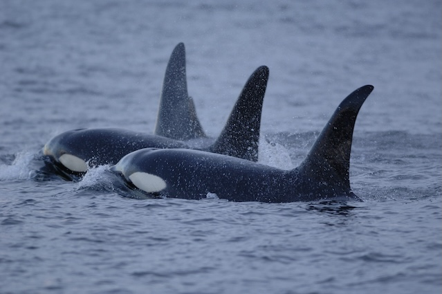

The Orca Whale
The orca whale, more accurately called the killer whale, is one of the ocean's most powerful and intelligent predators. In fact, the orca is actually not a true whale, and is the largest member of the dolphin family.
Diet and Hunting
Orcas are apex predators, meaning they are the top of the food chain.
Their diet varies depending on their population, some groups specialize in specific prey and they often demonstrate teamwork and strategy when they hunt. Their diet can consist of:
- Fish
- Seals and Sea Lions
- Penguins
- Sharks
- Even large whales
Size and Appearance
- Length: 20-26 feet
- Weight: Up to 6 tons
Orcas are easily recognized by their:
- Black and white coloring
- Tall dorsal fins
- Distinct white eye patch
Threats and Conservation
According to the International Whaling Commission, "killer whales were actively hunted in a Norway, Japan, the Soviet Union and the Antarctic through until the 1980’s, but are now only taken in small numbers for food (or as a population control measure) in coastal fisheries in Japan, Greenland, Indonesia, and the Caribbean islands".
In an attempt to recover the orca population, NOAA Fisheries understands that the "recovery of their population requires cooperation across state and national borders. NOAA is coordinating with Fisheries and Oceans Canada, the Washington Department of Fish and Wildlife, the Center for Whale Research, and other partners to conduct research and implement recovery actions".
